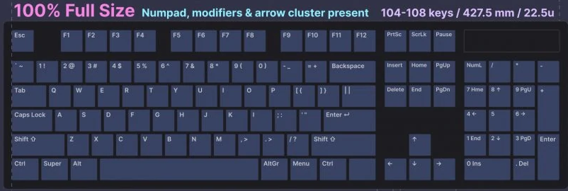
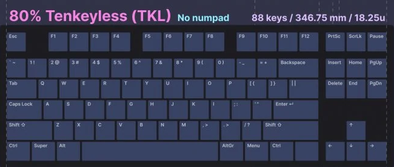
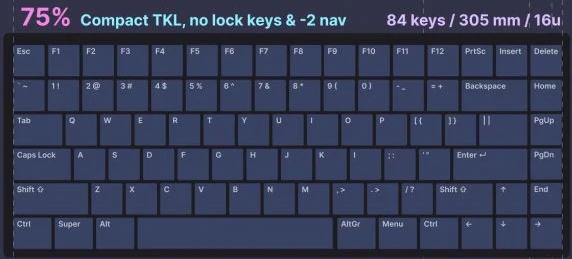
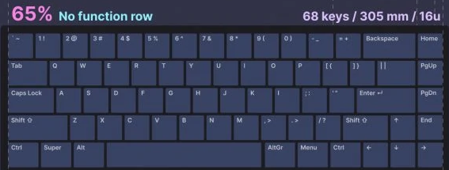
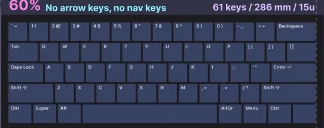

What is a mechanical keyboard?
A mechanical keyboard is a keyboard built with high quality, typically spring activated, key switches. These key switches vary based on the keyboard’s application or user preference. While some of the first widely sold keyboards such as IBM’s Model M in the 1980’s utilized mechanical switches, the 1990’s brought on a wave of inexpensive rubber dome keyboards that flooded the keyboard market. Rubber dome keyboards represent over 90% of keyboards in use today and provide an inexpensive but dissatisfying feel and typing experience.
Different size keyboards
Full size
The keyboard layout that most people are familiar with. Full size keyboards come with anywhere from 104 to 108 keys and typically span 22.5u or roughly 427.5mm in width, outside of specialty keyboards, they’re the widest option keyboard. 100% keyboards have the full spaced out function keys, arrow cluster, navigation and numpad with separation to easily identify keys.
Tenkeyless (TKL)
This is a compact fersion of the full size. It doesn't have the numpad. But it does have the arro cluster and the function keys. It is a good option if you are not using the numpad but want to keep the arrows and the function keys.
75% keyboard
The 75% is a compact TKL. It doesn't have lock and pause key. And the right shift and ctrl keys are smaller.
65% keyboard
The 65% is the same width as the 75%.It is without the function keys.
60% keyboard
If you don't have desk space this is probably the best choice for you. It doesn't have function keys as the 65%. The arrow and navigaion keys as missing as well.
Keycaps
A keycap is the plastic covering on top of each key switch that identifies the letter or symbol input into the computer. Casual users are content with stock keycaps, but keyboard enthusiasts often switch keycaps out for custom options.
Why Get a New Keycap Set?
With the exceptions of very expensive mechanical keyboards, most keyboards come with very cheap and mass-produced keycaps that make the keyboard dull and bland. The keycaps are what your going to be looking and typing on during the entire lifespan of your keyboard, so shouldn’t they be one of the nicest parts of the keyboard? There are many benefits to getting new keycaps, and they can make a $50 keyboard feel like a $150 one for a relatively cheap price.
The main benefits are the aesthetics as you are able to choose the color and design of the keycaps which will allow the RGB lighting to flourish. The keycaps also are more durable, which means the legends won’t slowly disappear after some heavy use. In addition, by customizing the profile design you will have a keycap set that feels comfortable and efficient to type on. There are a lot of different styles of keycaps sets out there so let’s go over some of the different options and features.
What is the Best Keycap Material?
In the world of keycaps, there is really two main material types you can get; ABS (Acrylonitrile Butadiene Styrene) and PBT (Polybutylene Terephthalate). You may be wondering, what the heck is ABS & PBT? Well, they are two different types of plastic with different property qualities. Both types of plastic have a different feel, sound, and look to them.
ABS keycaps are the cheapest and most common plastic used for keycaps. ABS keycaps are mass produced because of how easily they are injection molded. PBT plastic is less common but is usually higher quality than ABS. ABS keycaps feel smooth and develop a greasy shine over time, while PBT keycaps feel textured and are more durable. PBT are considered superior to ABS since they are more durable and wear down less over time.